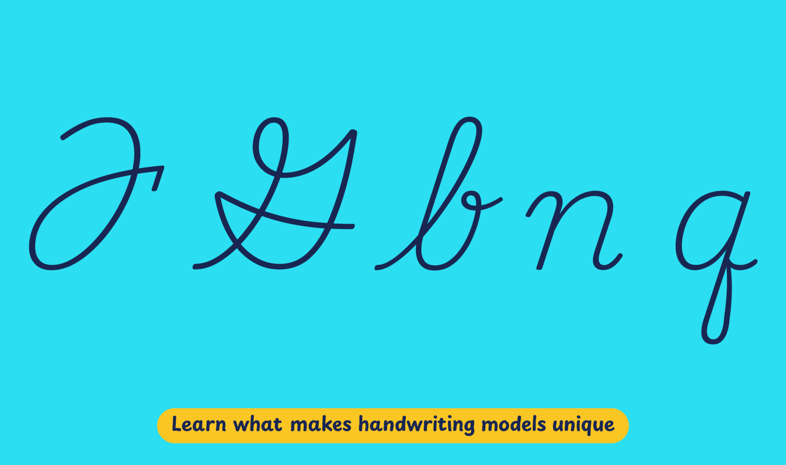

Since the 1992 educational reform, the curricula for primary education no longer provide details about handwriting instruction or specific writing models. Moreover, it grants teachers the freedom to choose teaching methods for reading and writing instruction during the earliest stages. However, nearly all private schools and most public ones teach cursive writing — either alongside or sequentially — with print letters. But the resources they use for teaching cursive writing are privately acquired from publishing houses or created by teachers themselves.
In this context, local type designers have been commissioned to create typefaces that match the styles familiar to teachers. These typefaces are usually similar to North American penmanship models, more likely, a derivative from the National Commission of Free Textbooks workbooks dating back to the 1960s.
Playwrite México is a variable font with a weight range from Thin (100) to Regular (400), and supports over 150 Latin-based languages.
To contribute, see github.com/TypeTogether/Playwrite.
This slanted continuous cursive closely mirrors North American models such as Palmer or Zaner-Bloser. The uppercase letters are cursive and include some complex shapes, notably in 'F', 'I', and 'G'. The lowercase letters feature medium-length extenders, with 'f' and 'q' displaying mirrored descender loops that add intricacy. The letter 'z' is designed with a curved top, while 'b', 'v', and 'w' incorporate knots, contributing to the overall ornate style. The construction of the letters is characterized by a slow and complex execution, emphasizing the deliberate and decorative nature of this handwriting style.

Playwrite México appears in font menus with a two-letter country code ‘MX’, Playwrite MX, and features four styles: Thin, ExtraLight, Light, and Regular.
The download .zip file includes the variable font and standard static ttf fonts for each style.
The Playwrite school fonts are based on the findings of Primarium, a groundbreaking educational effort that documents the history and current practice of handwriting models taught to primary school students worldwide. This typographic engine serves teachers, educators, and parents by generating localized libre fonts. These Playwrite fonts are complemented by Playpen Sans, an informal and fun typeface designed for annotations, instructions, and student notes – that also includes emojis.
For more information about the Primarium project, visit primarium.info and to learn more about handwriting education in Mexico, see primarium.info/countries/mexico
Windows: Download the font file to your computer. Navigate to where you saved the font file and double-click it to open. Click the "Install" button at the top of the font preview window. The font is now installed and ready to be used across your apps.
macOS: After downloading the font file to your Mac, right-click it in Finder and select "Open With" > "Font Book". Then, click "Install Font" in the font preview window that pops up. The font is now installed and ready to be used across your apps.
The Playwrite font family uses complex OpenType features to generate connected writing. Some common applications require these features to be manually activated.
Note: This font family doesn't include Bold or Italic styles, so please avoid applying them in text editors. If you use the common 'B' and 'I' buttons, you will automatically generate low-quality styles.
Microsoft Word: Go to Format in the Menu bar, select Font, and then the Advanced tab. Activate "Contextual Alternates" and "Kerning for fonts below" to apply these settings to all text sizes.
LibreOffice: To select the different styles, go to Format in the Menu bar, select Character, and use the Typeface menu.
Adobe InDesign: Open the Paragraph Panel and select Adobe "World-Ready Paragraph Composer" from the contextual menu.
Adobe Illustrator: Navigate to Preferences > Type, check the "Show Indic Options" box, and close preferences. Then open the Paragraph Panel and select "Middle Eastern Composer" from the contextual menu.
Adobe Photoshop: Access the Paragraph Panel, then choose "World-Ready Layout" from the contextual menu.
The above instructions are also available in PDF format here